CS 180: Computer Vision and Computational Photography, Fall 2024
Rebecca Feng
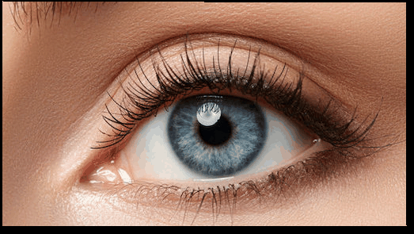
Introduction
Part 1: Defining Correspondences
In order to morph one image to another, Ineed to mark some reference points
on both images that correspond to each other, so that certain parts of the first image
know which direction to deform to into the second image. The point-marking is accomplished using
the web interface linked here.
In order to visually effectively interpolate between the two images, Ialso compute a triangle
mesh out of the given set of vertices for both images using Delauney triangulation, with the intent that
Ideform each triangle face from one image to the next.
There needs to be a 1-to-1 correspondence with the mesh in the first image with the second so that
each point specified within the first image has a "final destination" or a position to interpolate to
in the second image.
Below are two example images with the point/vertex positions marked at key facial features (for example,
around the eyes, contours of the face, mouth, etc.), as well as a visualization of both images'
mesh representation. The middle bottom figure displays both images' meshes overlayed with the mesh
generated by interpolating halfway between the two images.
Labeled vertices on Rebecca and George (Clooney)
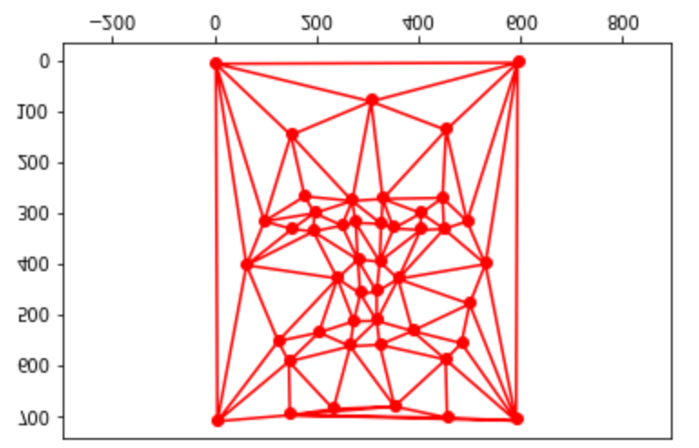
Mesh representation of George
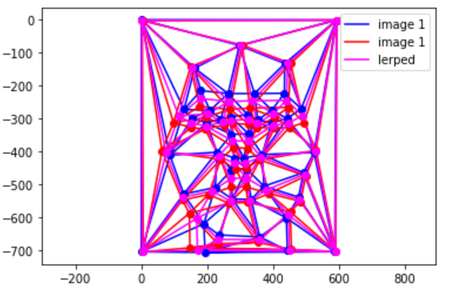
Interpolated mesh of George and Rebecca
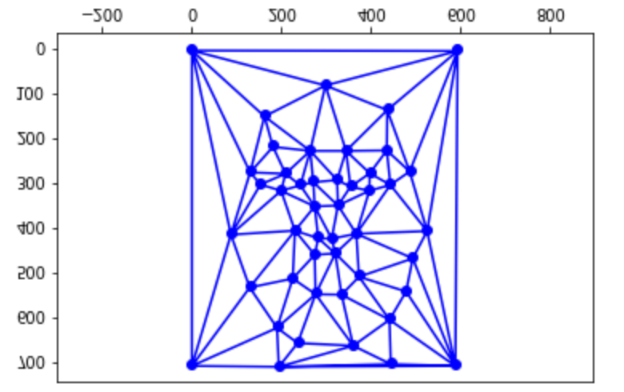
Mesh representation of Rebecca
Part 2: Computing the Mid-way Face
In order to compute the midway image's colors, Ineed to consider several things:
The midway mesh's triangle faces, and their transformation matrix
between each individual triangle in both of the original images' meshes.
Let's denote the transformation matrix between an arbitrary coordinate in the midway image with
that in image 1 as A_midto1 and a coordinate in the midway image with
that in image 2 as A_midto2. Then:
The color of each triangle in the interpolated mesh by sampling the original image.
I get a list of all coordinates within a given triangle face in the mesh, and use the
formulations in (1) to obtain the coordinates in image 1 to sample a color from.
I used bilinear interpolation sampling to avoid any aliasing artifacts
when sampling pixels in the original images.
Irepeat this procedure for all triangles in the mesh in order to fill in all the colors
in the midway image
Cross dissolving both images
For this section, Iwant to have our image be 50% Rebecca and 50% George, so I
add the two transformed midway image buffers and average the color channels per pixel.
Here are the results for 50% cross dissolve and 50% deformation:
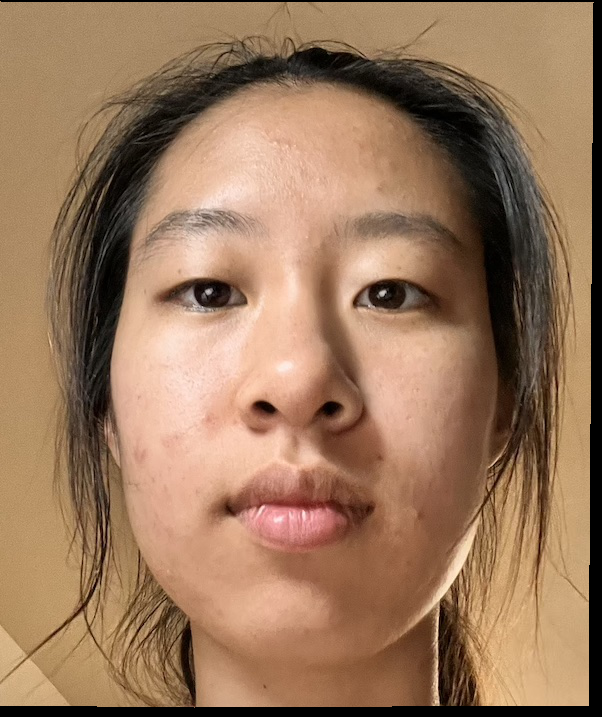
0% cross dissolve and deformation
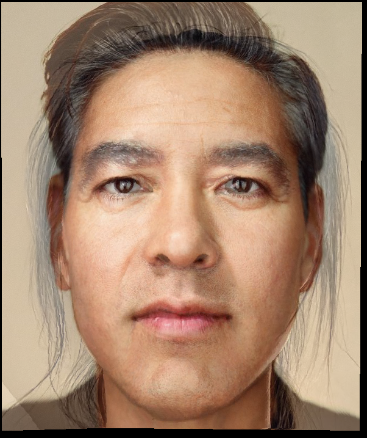
50% cross dissolve and deformation
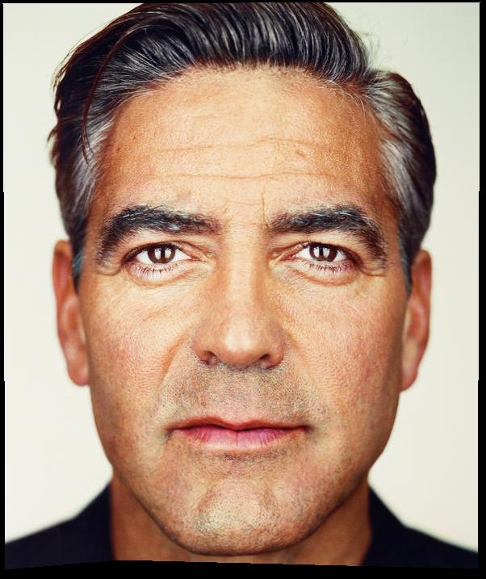
100% cross dissolve and deformation
Part 3: The Morph Sequence
We generalized Part 2's algorithm to include different levels for mesh deformation
and cross dissolution. We render out 45 frames of an image morphing into another while
incrementing the cross dissolve and the deformation by 1/45 each time.
The general linear interpolation method for cross dissolution and deformation is
\( result = image_1 + percent * (image_2 - image_1)\)
Results are shown below:
Part 4: The "Mean face" of a population
I used the FEI face database to
calculate and display the average Brazilian face. First, I computed the position of the points
of the average face, and morphed each image within the dataset to those points. Finally, I averaged
the images together into one. Results are as follows:
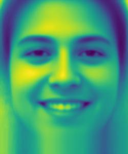
Average of 200 Brazilians smiling
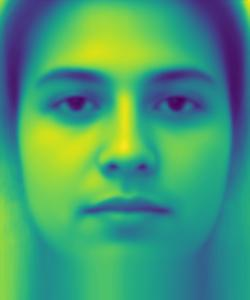
Average of 200 Brazilians not smiling
Here are some sample images from the dataset that were morphed into the shape of the average face:
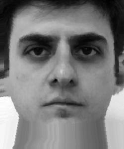
(a)
(b)
(c)
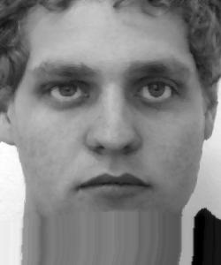
(d)
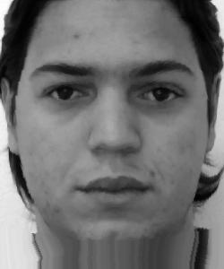
(e)
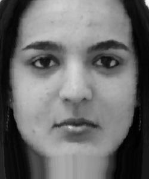
(f)
Here is the result of morphing the average Brazilian face to my face shape, and my face to the average Brazilian face shape.
I look SO brazilian.
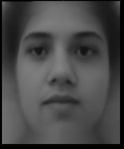
Average Brazilian as my face shape
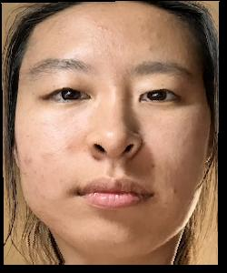
My face as an average Brazilian face shape
Part 5: Caricatures: Extrapolating from the mean
We can create caricatures of images by cranking the linear interpolation percentage past 100%
(or below 0%, depending which way you want to deform). Here are the results for making my face
EXTRA Brazilian, by 130%, 160%, 200%:
130%
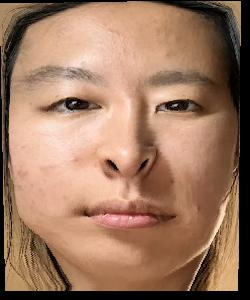
160%
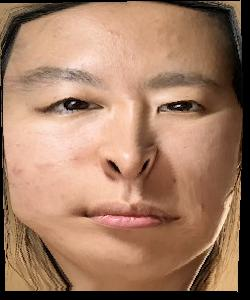
200%
Bells and Whistles + Extra items
We use the same idea of facial morphing with a photo of the average middle-aged East Asian
face and mine. The average middle-aged East Asian face was taken from this study.
The alignment of the photos isn't that symmetric due to the low resolution of
the average East Asian face image, making it hard to accurately mark reference points.
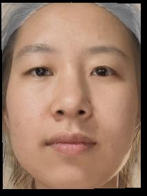
Midway image
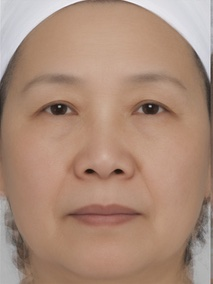
Original image 1
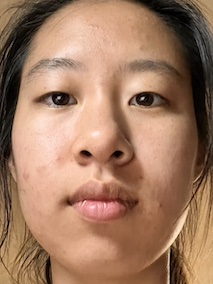
Original image 2
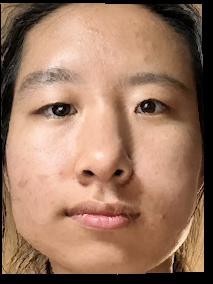
My face as an old person
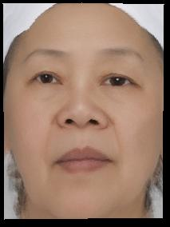
Old Asian lady as me
We use the same idea of facial morphing with a photo of my boyfriend and Megamind:
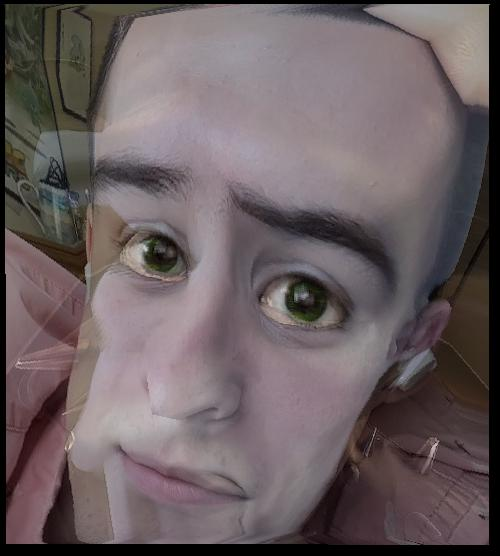
Midway image
Original image 1
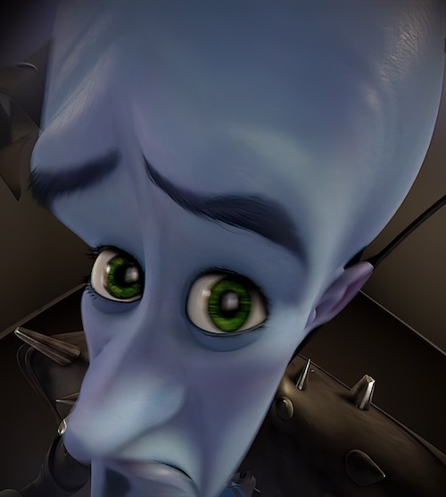
Original image 2
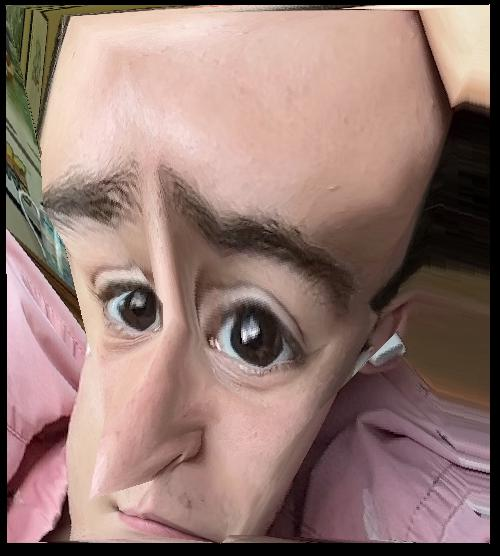
Caleb's face deformed to Megamind's face
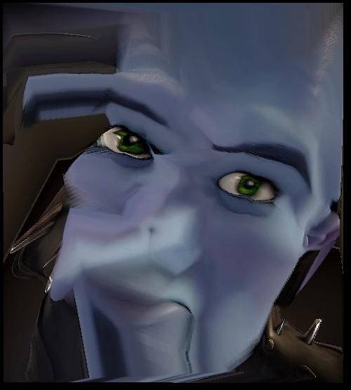
Megamind's face deformed to Caleb's face
Here's a small music video of multiple faces of my cat: